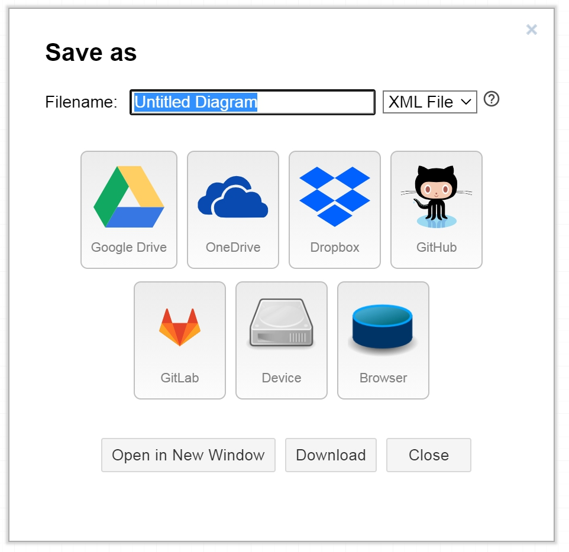

実装する機能
画面の設計をする
draw.ioを開く
メニューの「File」→「Save」をクリックする
共同編集するには保存先をGoogleドライブかOneDriveにする

メニューの「File」→「Share」をクリックする
「リンクをコピー」を押して共有する

画面を設計する

GitHubにリポジトリを作成する
右上の＋のNew repositoryをクリックする

作成する

「Settings」→「Manage access」からメンバーを招待する

作業を割り当てる
「Issuesタブ」を開いて「New issue」をクリックする

タイトルを入力してAssigneesで作業を割り振る

機能が完成したら「Close with comment」をクリックする